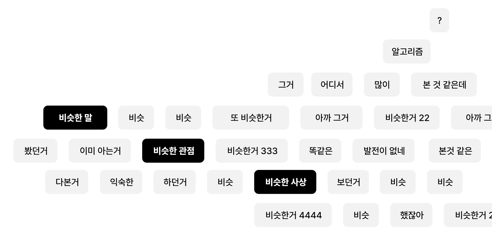

'나를 위한 추천'인 알고리즘
대체 알고리즘은 어떻게 나를 알아내고 조종하는 걸까요?
이렇게 과거의 내가 남긴 흔적을 계산해 미래의 내가 보고싶어 할 콘텐츠를 찝어내는 추천 알고리즘을
'CBF 방식'과 'CF방식'
으로 나누곤 합니다.
*CBF란?
: 기존에 선호했던 콘텐츠와 유사한 특성을 지닌 콘텐츠를 추천하는 ‘콘텐츠 기반 필터링’
*CF란?
: 사용자와 성향이 비슷한 다른 사용자가 선호하는 콘텐츠를 추천해주는 ‘협력 필터링’
문제는 이 추천 시스템들이 사용자의 과거 행동과 성향을 넘어서는 추천은
절.대.로.
할 수 없다는 사실이죠.
이러한 온라인 공간에서의 선별적 미디어 소비와 소통은
'에코 챔버'라고 부르기도 해요
인스타그램, 트위터 등의 소셜 미디어는
알고리즘을 통해 개인의 선호에 맞춘 선별적 미디어 소비를 추동하고,
이에 따라 편향된 정치적 담론과 정보가 공유되어 정서적 양극화가 강조됩니다.

온라인 공간의 에코 챔버에 모인 사람들이
다른 생각을 가진 이들은 배제하고 자신들의 생각은 강화한다는 것이지요.

이러한 현상은 단순히 콘텐츠의 영역에서 끝나는 것이 아니라

등등...
사람들의 행동에 영향을 미치면서 이러한 사회문제를 일으키기도 한다는 사실!
심지어 다른 생각과 가치를 지닌 사람들의 일상을 보고 싶다면
내가 공감하지도 않는, 아니 어쩌면 혐오할지도 모르는 글에 ‘좋아요’를 억지로 눌러
알고리즘을 속여야 하는 기묘한 상황이 펼쳐지기도 합니다.
이게 얼마나 웃기는 상황인가요?
그렇다면 우리는 무엇을 선택해야 할까요?
시스템 구조 상 현대 시대에서는 알고리즘에게서 벗어나기란 물리적으로 불가능에 가깝습니다
따라서 우리는 폐쇄적 추천 방식에서 벗어나
개방적이고 탐색적인 추천 시스템에 대해 논의해야 합니다
그리고 동시에, 우리 스스로도 질문해야 해요
내가 스스로 선택했는지, 아니면 알고리즘의 추천에 이끌리고 있는지